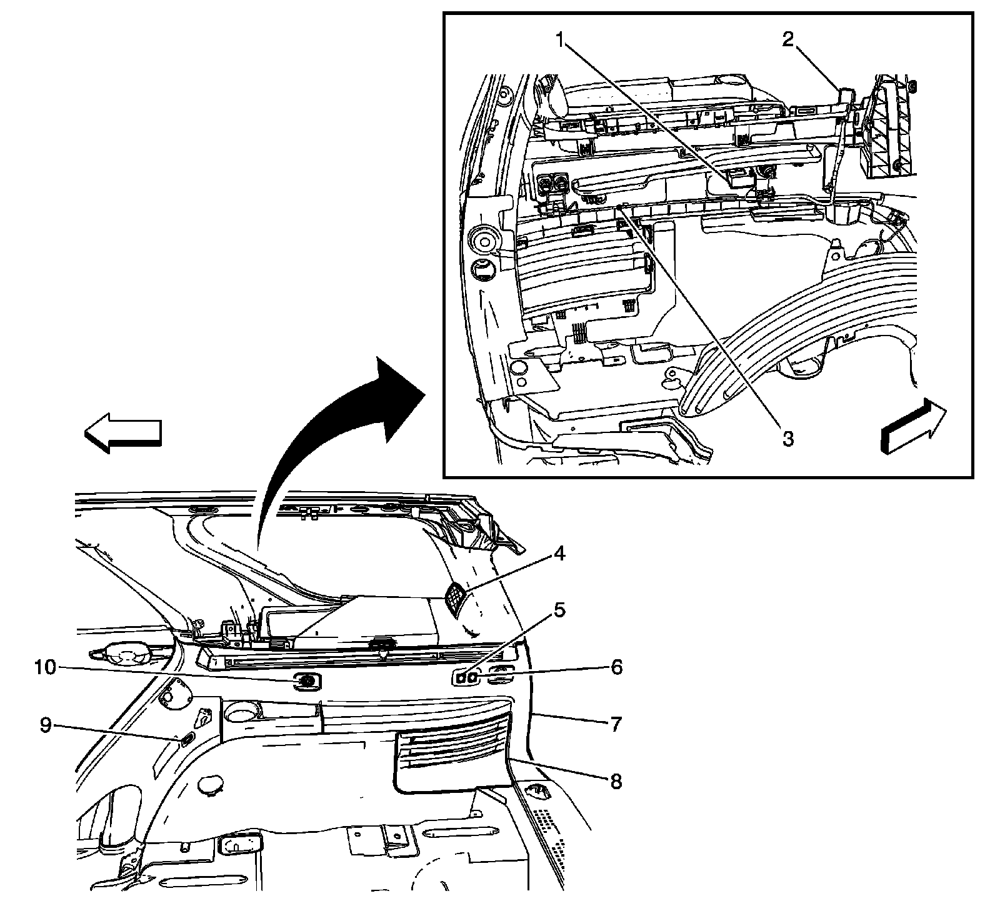
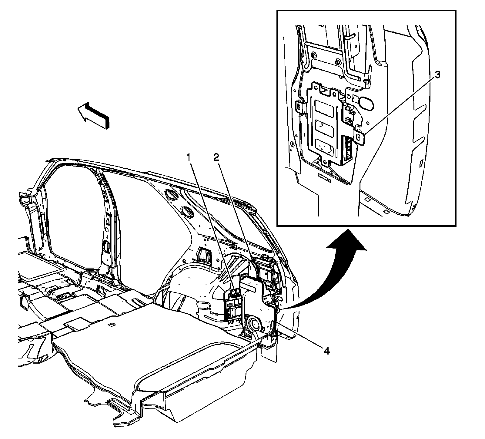
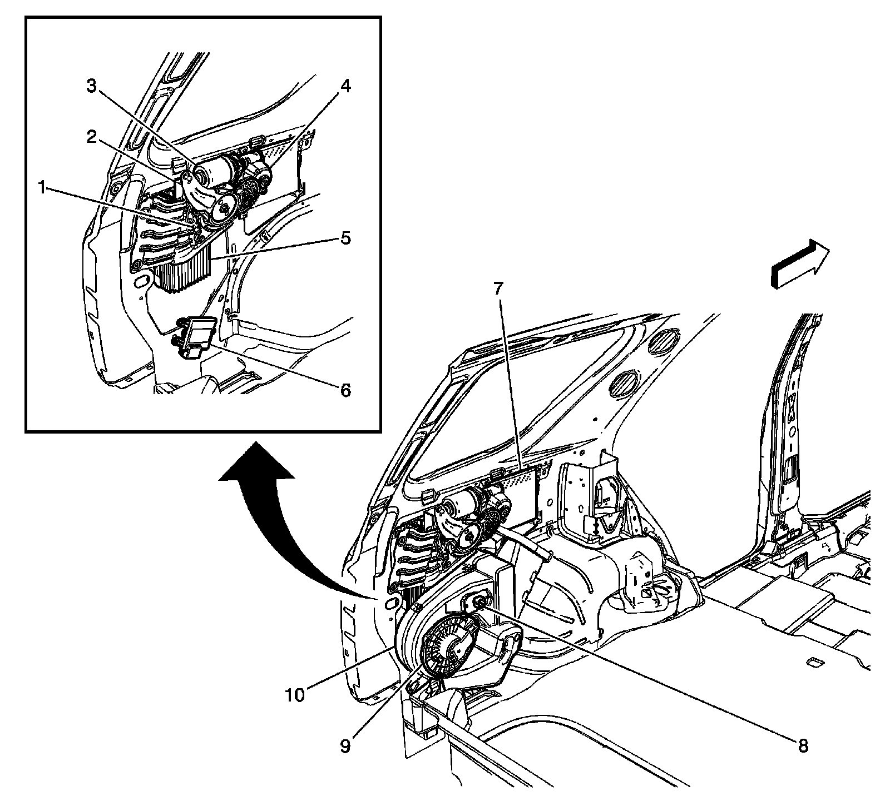
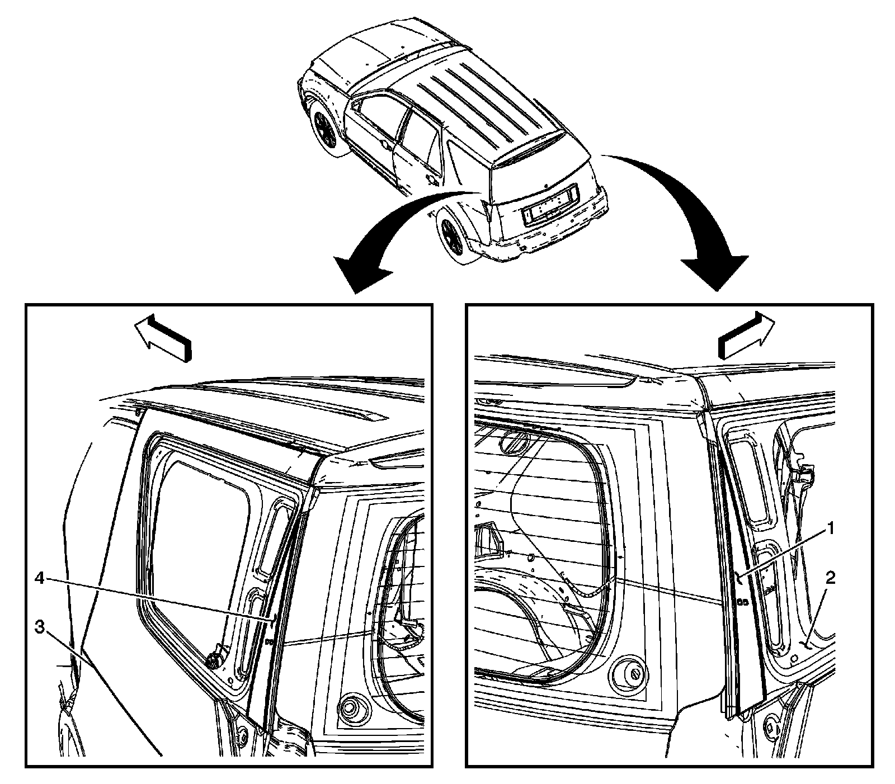
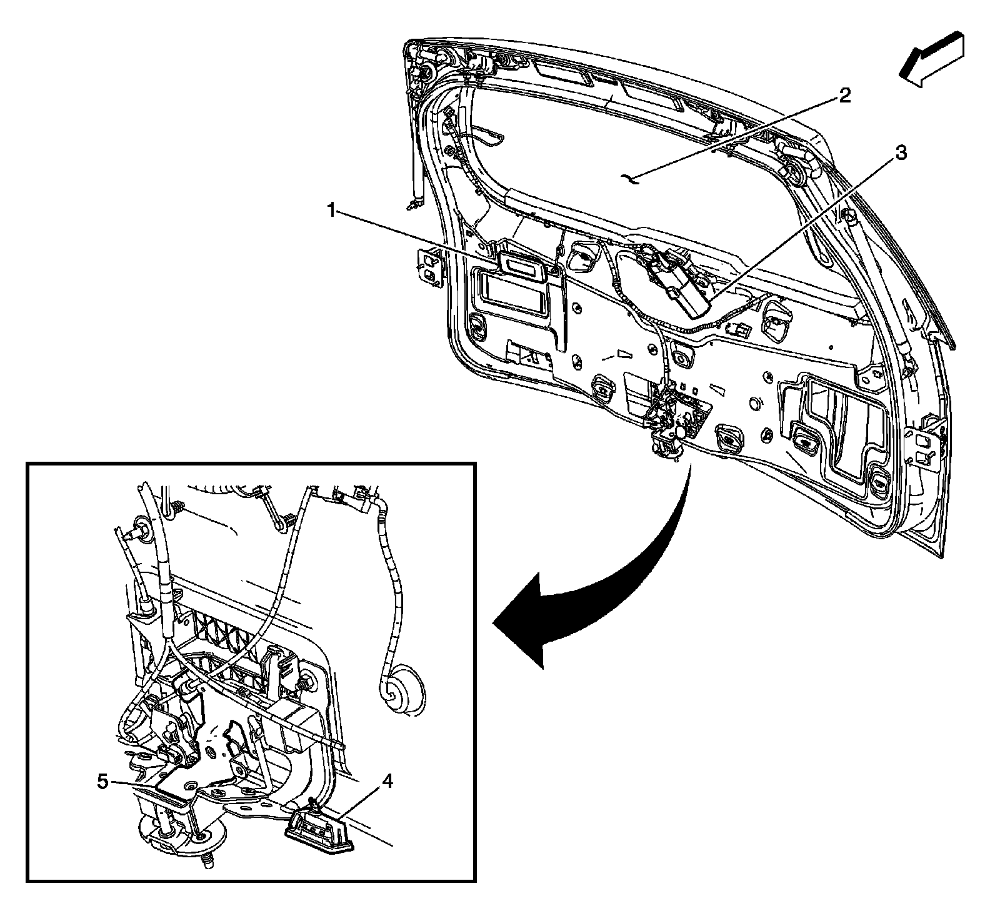

Trunk / Liftgate Switch: Locations
Luggage Compartment/Rear of Vehicle Component Views
Right Rear Cargo Area Components

1 - Folding Seat Recline Switch (AM0)
2 - X416
3 - Auxiliary Power Outlet - Rear
4 - Remote Control Door Lock Receiver (RCDLR)
5 - J306 (AM0)
6 - Speaker - Right D-Pillar (UQS)
7 - Folding Seat Stow Switch - Front (AM0)
8 - Folding Seat Stow Switch - Rear (AM0)
9 - Rear Quarter Trim Panel - Right
10 - Speaker - Rear Subwoofer
Right Rear Cargo Area (Domestic)

1 - Electronic Suspension Control (ESC) Module (F55)
2 - Digital Radio Receiver (U2K)
3 - Vehicle Communication Interface Module (VCIM) - (UE1)
4 - Speaker-Rear Subwoofer
Right Rear Cargo Area (Export)

1 - Digital Radio Receiver (U2K)
2 - Theft Deterrent Alarm Siren (UA6)
3 - Inclination Sensor
4 - Rear Body Control Module (RBCM)
Left Rear Cargo Area

1 - Power Liftgate Open Switch
2 - Power Liftgate Module
3 - Power Liftgate Motor
4 - Power Liftgate Clutch (PLC)
5 - Audio Amplifier (UQA/UQS)
6 - Rear Object Sensor Control Module
7 - TV Tuner Module (U2Y/U2X)
8 - Blower Motor Resistor Assembly-Auxiliary (C57)
9 - Blower Motor-Auxiliary (C57)
10 - HVAC Control Module-Auxiliary (C57)
Luggage Compartment/Rear of Vehicle Component Views
Outer Upper Liftgate Components

1 - Liftgate Side Upper Sensor - Right
2 - Inner Side Panel - Right Rear
3 - Quarter Panel - Left Rear
4 - Liftgate Side Upper Sensor - Left
Liftgate Components

1 - Courtesy Lamp-Rear Liftgate
2 - Rear Window Defogger Grid
3 - Rear Window Wiper Motor
4 - Liftgate Open/Close Switch
5 - Liftgate Latch Assembly